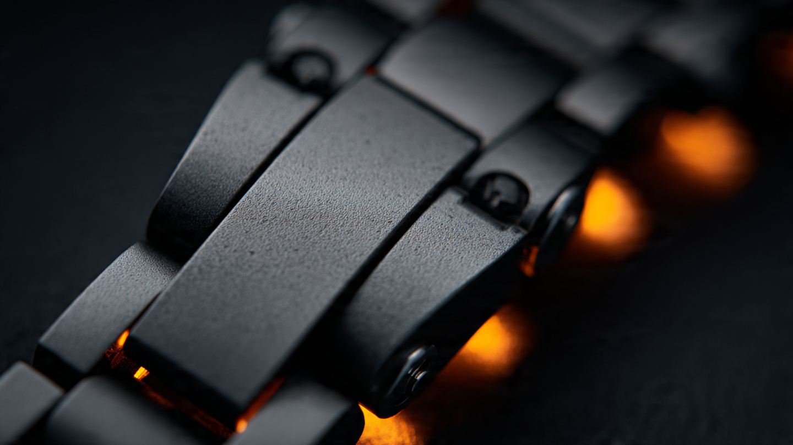

Every Link Is a Kiln: How Tudor Built Its First All-Ceramic Bracelet

Metal watch bracelets are mature technology. You stamp links from steel sheet, machine pin holes to spec, press in connecting pins, and assemble. Sizing takes a spring bar tool and two minutes. Millions of steel bracelets ship every year, and the process has barely changed since the 1950s.
Ceramic bracelets break every assumption in that chain. You cannot stamp zirconia. You cannot press pins through green ceramic without cracking it. You cannot add or remove material after firing without diamond tooling and a significant risk of fracture. Every link must be individually injection-molded, sintered at 1,450 degrees Celsius, diamond-machined, and then assembled with connection hardware that accommodates a material incapable of flexing.
At Watches and Wonders 2026, Tudor showed its first ceramic bracelet on the updated Black Bay Ceramic, reference 7941A1ACNU. A three-link design in matte black zirconia, paired with a 41 mm ceramic case and the METAS-certified MT5602-U caliber. Priced at CHF 6,300, it is a CHF 1,300 premium over the strap version. That premium buys something more interesting than a different attachment method. It buys a solution to one of the hardest manufacturing problems in the watch industry.
Why Ceramic Bracelets Are Rare
Zirconia ceramic is the dominant material in advanced watch cases. Stabilized with yttria (Y2O3) to prevent phase transitions that would cause cracking, tetragonal zirconia polycrystal (TZP) delivers approximately 1,200 Vickers hardness, roughly six times that of 316L stainless steel. It is scratchproof against household abrasives, biologically inert, hypoallergenic, and lighter than steel by about 30%.
Cases are complex but singular objects. One injection mold, one sintering cycle, one diamond-machining pass. A bracelet multiplies those demands by the number of links, and then adds articulation. A typical three-link bracelet for a 41 mm watch requires approximately 15 to 20 individual ceramic components, each fired separately and each subject to the same 23% volumetric shrinkage during sintering. If any single link cracks during firing or machining, the entire bracelet is incomplete. Rejection rates for ceramic bracelet links run substantially higher than for cases, because the shapes are thinner, more complex, and subject to stress concentration at pin holes.
Pin holes present the core engineering challenge. In a steel bracelet, pin holes are drilled after the link is formed. Steel tolerates the stress of a drill bit passing through it. Ceramic does not. Pin holes in ceramic links must be formed during the injection-molding stage, before the material is fired. That means the mold must account for 23% shrinkage in every dimension, including the diameter and position of each hole. After sintering, the holes are precision-reamed with diamond tools, but the fundamental geometry was locked in at the powder stage.
Connection pins add another layer. Steel-to-steel pin connections rely on slight elastic deformation: the pin compresses fractionally during insertion and grips the hole through friction and spring force. Ceramic cannot deform elastically in any meaningful way. Force a pin into a ceramic hole with too-tight tolerance, and the ceramic shatters. Leave too much clearance, and the bracelet rattles. Tudor uses steel screws rather than friction-fit pins, visible as a flat-head screw on one side and an oval cap on the other. Removing links for sizing requires prying out the cap first, then unscrewing, a process deliberate enough that Tudor recommends taking the watch to an authorized dealer.
What Tudor Chose (and What It Gave Up)
Tudor's ceramic bracelet is a three-link design with a 21 mm width at the lugs, tapering slightly toward the clasp. All links are matte black zirconia with a microblasted finish. Sandblasting ceramic is counterintuitive because ceramic resists abrasion, but calibrated media at controlled pressure can texture the surface without removing material. What you lose is the option for contrast finishing. Steel bracelets alternate between brushed and polished surfaces, creating visual depth. Ceramic at this price point gets one finish: uniformly matte.
More significant is the clasp. Tudor's steel Black Bay bracelets feature the T-Fit micro-adjustment system, a tool-less mechanism that adjusts bracelet length in 0.8 mm increments for thermal comfort. Ceramic cannot accommodate T-Fit. The material's rigidity and the clasp's requirement for spring-loaded detent points are incompatible at reasonable thickness. Instead, Tudor fits a push-button butterfly deployant clasp in PVD-coated steel. It opens cleanly and sits flat against the wrist, but there is no on-the-fly adjustment. Bracelet sizing happens at the point of sale, by removing links.
Half links, the intermediate-sized links that allow finer sizing on steel bracelets, are not available either. Ceramic bracelet manufacturing economics work against producing low-volume half-link variants. Each half-link shape would require its own injection mold, sintering profile, and machining program. Given that the molds alone represent a major tooling investment, Tudor opted for a single link geometry and accepted that fit will be less granular.
One more trade-off: the bezel ring is PVD-coated 316L steel, not ceramic. While the bezel insert (the graduated diving scale) is ceramic with a sunray satin finish, the ring that holds it is steel with a black coating. PVD coatings are durable but not permanent. Under sustained abrasion, the coating can wear through to reveal the steel beneath. Tudor likely made this choice because the bezel ring endures more mechanical stress from rotation and impact than the static case. A ceramic bezel ring that cracked from a bump would be a warranty and perception problem far more damaging than a slowly wearing PVD finish.
Competitors in Ceramic
Tudor did not invent the ceramic bracelet. Rado has been producing ceramic bracelets since the 1990s through ComaDur, the Swatch Group facility in Le Locle that processes ceramic from powder to polished component. Chanel's J12, launched in 2000, popularized the ceramic bracelet as a luxury object and remains the most commercially successful example. Both brands have decades of accumulated process knowledge, proprietary tooling, and in-house ceramic facilities.
Tudor does not have an in-house ceramic operation. Its ceramic components come from external suppliers, which adds supply chain complexity but also explains the timing. Ceramic supply chains for watch components have matured significantly since 2020, with more contract manufacturers capable of producing to Swiss tolerances. Five years ago, a brand without its own ceramic line would have struggled to source bracelet-quality links. Today, the supplier ecosystem makes it feasible, though still expensive.
Formex, a Swiss independent, offers a ceramic bracelet on its Reef model with a notable advantage: a micro-adjustable ceramic clasp. At roughly half the price of the Tudor, the Formex demonstrates that ceramic bracelets do not inherently preclude micro-adjustment. But Formex is producing in far smaller volumes, and its brand recognition is a fraction of Tudor's. Hodinkee's hands-on coverage noted the Formex clasp as a direct comparison point, and it is a fair one. Tudor's engineering choices reflect volume production constraints as much as materials science limitations.
IWC's Big Pilot Perpetual Calendar in ceramic (ref. IW503801) uses a ceramic case with a steel bracelet. Panerai's Submersible Marina Militare Carbotech line uses carbon-composite cases without ceramic bracelets. Omega's Dark Side of the Moon series pairs ceramic cases with leather or rubber. Among major Swiss brands, the list of those offering a full ceramic bracelet at any price remains short. Tudor's entry at CHF 6,300 makes it the most accessible ceramic-bracelet watch from a recognized Swiss name.
Caliber MT5602-U: Kenissi and METAS
Inside the sealed caseback sits Tudor's in-house caliber MT5602-U, manufactured at Kenissi, the movement factory jointly owned by Tudor (majority), Chanel, and Norqain. Kenissi opened in Le Locle in 2016 specifically to give Tudor independence from ETA, the Swatch Group movement supplier that has been gradually restricting third-party access since the Swatch Group announced its supply reduction in 2002.
MT5602-U is the METAS-certified version of the base MT5602. METAS, the Swiss Federal Institute of Metrology, tests finished watches (not just movements) against eight criteria including accuracy, magnetic resistance, water resistance, power reserve, and rate deviation in multiple positions. Passing requires accuracy of 0 to +5 seconds per day after exposure to a 15,000 Gauss magnetic field. COSC, by comparison, tests movements in isolation to a wider -4 to +6 seconds per day tolerance without magnetic exposure.
At 31.8 mm in diameter and 6.5 mm thick, the movement runs at 28,800 vibrations per hour (4 Hz) and delivers 70 hours of power reserve from a single barrel. A silicon hairspring provides the magnetic immunity that METAS demands. Silicon is diamagnetic: it does not interact with external fields at any strength. Traditional Nivarox hairsprings (iron-nickel alloy) are paramagnetic at best, and older versions were outright ferromagnetic. Replacing Nivarox with silicon eliminates the single most common cause of rate disturbance in mechanical watches: the magnetized hairspring.
Tudor was the second brand after Rolex to submit watches for METAS certification, a fact that carries significance. Rolex and Tudor share no movements, but they share a parent company (Hans Wilsdorf Foundation) and a philosophy that empirical testing outranks marketing claims. METAS certification costs money and time per unit. Stamping "Master Chronometer" on the dial is a commitment to testing every individual watch, not a representative sample.
Living with Monochrome
All-black watches are a genre with well-documented hazards. Dark dials, dark hands, and dark cases can produce a watch that reads beautifully in photographs and poorly on the wrist. Legibility suffers when contrast disappears.
Tudor navigates this with a charcoal sunray dial rather than true black. Under direct light, the dial shifts from dark gray to a lighter, almost metallic tone. Applied indices are glossy black, filled with a gray-toned Super-LumiNova that registers as a lighter shade against the brushed dial surface. Hands are also glossy black with gray lume. In practice, the contrast is adequate in daylight and functional in low light once the lume charges. It will never match the instant readability of a white-dial Black Bay, but that is the price of the aesthetic.
Weight is where the ceramic bracelet earns its keep. Ceramic is roughly 30% lighter than 316L steel at equivalent volume. A full steel Black Bay on bracelet weighs approximately 185 grams. Tudor has not published the ceramic bracelet weight, but comparable ceramic constructions from other brands suggest a complete watch weight around 130 to 140 grams. On the wrist, that reduction is immediately noticeable. Hodinkee's hands-on report noted that the bracelet's heft balances the case better than the previous strap options, which had created a top-heavy feel.
Comfort also benefits from ceramic's thermal properties. Zirconia is a poor thermal conductor (approximately 2 W/m·K versus 16 W/m·K for steel), meaning it absorbs less heat from skin and warms slowly. In practice, a ceramic bracelet feels slightly cool at first contact and then stabilizes to a neutral temperature. Steel bracelets conduct body heat away continuously, producing the familiar cold sensation on a winter morning.
At 41 mm, Looking Smaller Than It Is
Case dimensions are 41 mm in diameter, 13.55 mm thick, and 49.4 mm lug-to-lug. Those numbers put it firmly in the standard Black Bay size category. But all-black objects appear smaller than equivalent objects in lighter colors, a perceptual effect documented in visual psychology research. On a typical wrist, the Black Bay Ceramic registers as a 39 or 40 mm watch. The matte finish reinforces this by absorbing light rather than reflecting it, reducing the visual footprint further.
Water resistance is 200 meters, standard for the Black Bay dive collection. A screw-down crown in PVD-coated 316L steel and a monobloc caseback in ceramic complete the water seal. For a diver rated to 200 meters, the caseback material is a detail, not a structural concern. The gasket between caseback and case does the sealing work.
Pricing the Difficulty
CHF 6,300 on ceramic bracelet versus CHF 5,000 on hybrid leather/rubber strap. A CHF 1,300 delta for a bracelet might sound steep compared to the CHF 250 to 400 premium that a steel bracelet typically commands over a strap. But ceramic bracelet production involves tooling costs, higher rejection rates, and diamond machining that steel bracelets never require. At Chanel, the J12 in ceramic starts at approximately CHF 6,250 for a 38 mm quartz model. Tudor's CHF 6,300 buys a 41 mm METAS-certified automatic with an in-house movement and 200 meters of water resistance. Relative to the competitive landscape, it represents value.
Formex's Reef Automatic Chronometer in ceramic bracelet retails at approximately CHF 3,290. It lacks METAS certification and uses a Sellita-based movement rather than an in-house caliber, but it includes a micro-adjustable clasp and ceramic finishing that includes both polished and matte surfaces. Buyers choosing between the two are really choosing between brand recognition and feature density.
The Broader Ceramic Trajectory
Ceramic cases are widespread in the Swiss industry. Ceramic bracelets remain rare because the manufacturing difficulty scales multiplicatively with link count. Each additional link is another opportunity for a sintering crack, a tolerance deviation, or a machining fracture. Brands that produce ceramic bracelets in volume have invested years and millions of Swiss francs in process optimization.
Tudor's entry into ceramic bracelets signals that the supply chain has matured enough for brands without in-house ceramic facilities to participate. That is significant for the industry. If Tudor can source ceramic bracelet links from contract suppliers at volume quality, so can other brands at similar or higher price points. Expect more ceramic bracelet options from Swiss names within the next two to three years as tooling costs decline and supplier capacity expands.
For now, the Black Bay Ceramic on its three-link bracelet is a specific proposition. It is a fully monochrome, METAS-certified dive watch that weighs less than most steel equivalents and will look essentially identical after five years of daily wear. No hairline scratches on the case flanks. No bracelet marks from desk contact. No polished-to-matte transitions wearing into each other. Just matte black ceramic, exactly as it left the kiln.
Sources
- Monochrome Watches, "Introducing: The Tudor Black Bay goes Full Black Ceramic, Bracelet Included," April 2026.
- Hodinkee, "Hands-On: The Tudor Black Bay Ceramic And Its New Ceramic Bracelet," TanTan Wang, April 2026.
- Fratello Watches, "Introducing The New Tudor Black Bay Ceramic," Henry Black, April 2026.
- Tudor, "Black Bay Ceramic M7941A1ACNU Technical Specifications," tudorwatch.com, 2026.
- Tudor, "Inside Tudor: Manufacture Calibre MT5602-U," tudorwatch.com.
- Azom.com, "Zirconia Engineering Ceramics for High Strength," technical reference.